◉ VISÃO GERAL DAS FERRAMENTAS SLEUTH KIT (O KIT DETETIVE) E DOS SISTEMAS DE ARQUIVOS
O primeiro setor de um disco rígido é chamado Master Boot Record. O registro mestre de inicialização (ou MBR)
que contém o código de autoinicialização e a tabela de partições que contém as entradas com as informações
sobre cada partição no disco.
Uma partição pode ser definida como um conjunto de setores contíguos do disco formatados com o mesmo sistema
de arquivos.Os computadores mais antigos que dependem do MBR podem ter no máximo quatro partições primárias,
embora possam ser criadas partições estendidas. O computador mais novo que acompanha a interface de firmware
extensível unificada ou UEFI usa ID globalmente exclusiva ou tabela de partição de ID que permite até cento e
vinte e oito partições primárias.
A tabela de partições em si não costuma ser de grande interesse para o examinador forense, a menos que haja
algumas partições a serem recuperadas devido à corrupção da tabela de partições. Uma ótima ferramenta para
recuperar partições é o TEST DISK instalado no Kali Linux, que também funciona em imagens de disco RAW.
Um volume pode ser definido como um conjunto lógico de dados formado por uma ou mais partições de
disco. Entretanto, você pode até estender vários discos físicos enquanto uma partição pode residir apenas
em um único disco.
Cada volume está associado a um sistema de arquivos. Um sistema de arquivos define a organização de armazenamento
e o gerenciamento dos dados no volume.
Os dados em um sistema de arquivos são estruturados em arquivos e diretórios.Um arquivo pode ser formado por um
ou vários blocos ou clusters, que são as menores unidades de dados disponíveis. Geralmente em sistemas de
arquivos modernos, os blocos têm um tamanho superior a 4 kilobytes.
As informações associadas a um arquivo ou diretório estão associadas em três camadas: Nome do arquivo, dados
e metadados.
• O nome do arquivo armazena o nome do arquivo e os ponteiros nos metadados relativos.
• Os metadados contêm todas as outras informações sobre o arquivo ou diretório, como a permissão de registro de
data e hora do proprietário e os ponteiros para os blocos de dados. É aqui que o conteúdo real do arquivo é
armazenado.
INTRODUÇÃO AO SLEUTH KIT
Tendo introduzido os conceitos fundamentais sobre particionamento de disco, volumes de sistemas de arquivos,
vamos mostrar como analisar praticamente um sistema de arquivos usando o SLEUTH KIT.
O SLEUTH KIT (o kit detetive, ou TSK) é um conjunto de ferramentas CLI forenses do sistema de arquivos
desenvolvidas por Brian carrier, que é um dos principais especialistas em análise forense do sistema de arquivos.
Baseia-se em parte do código do CORONER’S TOOLKIT (kit de ferramentas do legista, ou TCT) criado no final
dos anos 90 por Wietse Venema e Dan Farmer.
Enquanto o TCT só pode ser executado e usado para analisar em sistemas operacionais derivados do Unix, o
TSK é multiplataforma e agora suporta muitos sistemas de arquivos diferentes. Ele pode analisar diferentes
formatos de imagem, como imagens de disco RAW, EWF e AFF. O TSK é instalado por padrão no Kali Linux.
As ferramentas incluídas no TSK são divididas em grupos, dependendo da camada em que operam e do tipo de função
que desempenham.
Os prefixos dos nomes das ferramentas indicam a camada:
• “mm-“: Ferramentas que operam na camada de volume (Gerenciamento de mídia);
• “fs-“: Ferramentas que operam nas estruturas do sistema de arquivos;
• “blk”: Ferramentas que operam na camada da unidade de dados (ou “bloco”);
• “i-“: Ferramentas que operam na camada de metadados (ou “inode”).
Os sufixos dos nomes das ferramentas indicam a função e fornece o nome dos respectivos comandos UNIX:
• “-stat”: exibe informações gerais sobre o item consultado;
• “-ls”: lista o conteúdo da camada consultada;
• “-cat”: despeja / extrai o conteúdo da camada consultada.
Também existem outras ferramentas que não seguem esta convenção de nomenclatura.
ANALISANDO UM SISTEMA COM AS FERRAMENTAS SLEUTH KIT
Agora estamos prontos para analisar um sistema de arquivos e vamos usar a imagem do disco que adquirimos no
DC3DD. (Postagem https://douglasmendes.code.blog/2020/05/02/extraindo-imagem-para-analise-forense-com-a-ferramenta-dc3dd/ ).
Pode ser que sua imagem esteja dividida. Mas, sem problemas. TSK também trabalha com imagens divididas.
A camada mais alta é a camada de volume e a primeira ferramenta a introduzir é ls, que exibe os layouts das
partições em um volume que movemos no diretório em que os arquivos de imagem divididos estão armazenados e
listamos o conteúdo do diretório.
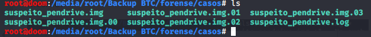
Em seguida, executamos mmls com o argumento que é o nome da imagem seguido de um asterisco para incluir todos
os arquivos de imagem divididos:
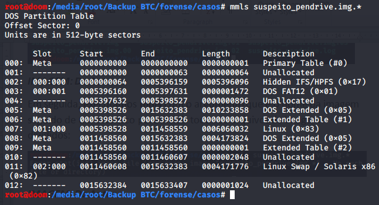
A saída é muito semelhante à do DISK TOOL, com a diferença de que o mmls também mostra setores não alocados do
disco e exibe as compensações da partição em setores numéricos.
Deixo a análise dos setores não alocados do disco quando abordarmos a gravação de arquivos e a recuperação de
dados para outra postagem.
No caso de partições, para exibir informações sobre o sistema de arquivos uma ferramenta, o prefixo FS pode te
ajudar (comando fsstat). Digitando o comando (exemplificando) fsstat –o 64 suspeito_pendrive.img.*
OBS: O número 64 é a localização exibida na tabela Start. Desprezar os zeros à esquerda.
A saída stat mostra informações muito detalhadas sobre o sistema de arquivos, como tipo, nome dos volumes, ID,
versão do sistema operacional e os últimos tempos de montagem e verificação verificados por escrito.
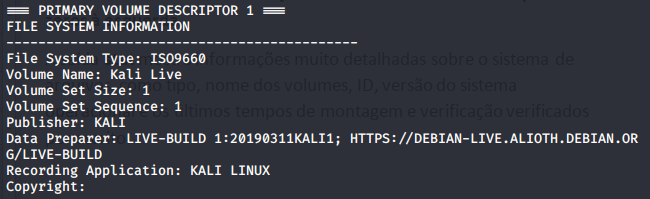
A segunda parte da saída mostra os metadados do sistema de arquivos que são o local da tabela de arquivos mestre
ou das entradas do arquivo MFT. As entradas associadas ao diretório raiz exibem um número
(nesse exemplo número 384). Ele mostra outras informações, como o tamanho do setor e do cluster,
e abaixo os atributos do arquivo.
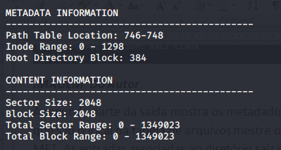
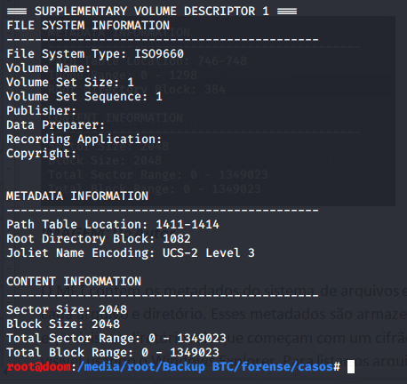
O MFT contém os metadados do sistema de arquivos e as entradas para cada arquivo e diretório. Esses metadados
são armazenados em arquivos especiais no diretório raiz que começam com um cifrão simples. Não é visível
usando o Windows Explorer. Para listar os arquivos, você pode usar fls.
Exemplo: fls -o 64 suspeito_pendrive.img.*
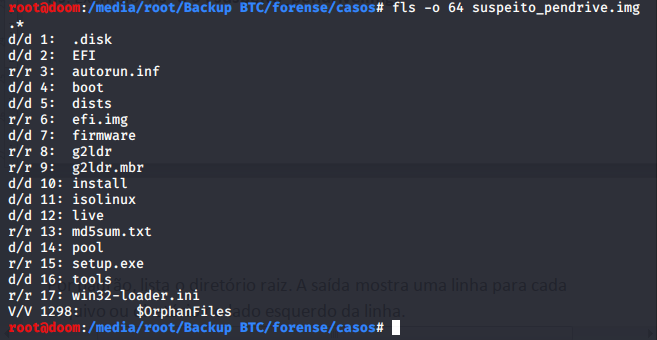
Por padrão, lista o diretório raiz. A saída mostra uma linha para cada arquivo ou diretório. À esquerda da linha,
aparece o tipo de arquivo. O R significa arquivo regular enquanto D é diretório. Em seguida, temos o endereço
de metadados. O primeiro número à esquerda indica a entrada MFT. Em seguida é o tipo de atributo.
O FS também pode exibir apenas arquivos excluídos e recursar em diretórios. Para extrair todas as entradas
excluídas do sistema de arquivos, executamos este comando: fls -o 64 -rpd suspeito_pendrive.img.*
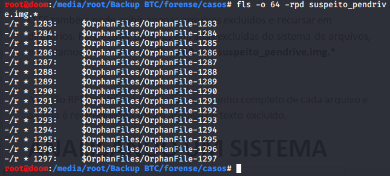
A opção RPD também é para exibir o caminho completo de cada arquivo e a saída é redirecionada para o arquivo
de texto excluído.
Nessa imagem utilizada não aparece tão claro. Para melhor demonstrar, escolhi a número 5398528.
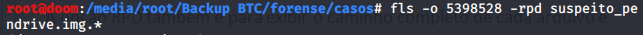
A listagem ficou bem extensa. Mas ao final dá pra demonstrar melhor:
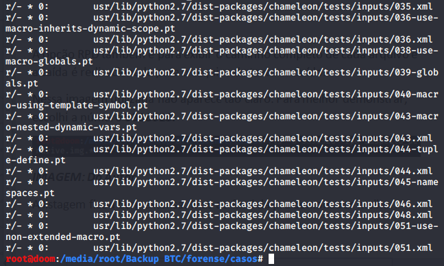
Há também uma opção para criar um arquivo de corpo para a geração de uma linha do tempo com a ferramenta de
tempo: fls-o 5396160 -m suspeito_pendrive.img.*
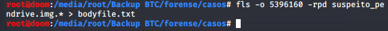
Outra ferramenta que pode gerar um arquivo de corpo é o ILS, que lista a estrutura das entradas da MFT:
ils -o 5396160 –m suspeito_pendrive.img.* > bodyfile.txt
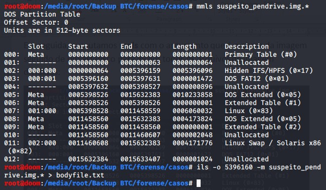
Para exibir os detalhes sobre uma única entrada MFT, podemos executar a ISTAT TOOL. Por exemplo, podemos
exibir os metadados da entrada 0 da MFT, o arquivo do dólar e o arquivo da MFT: istat
-o 64 suspeito_pendrive.img. * 0
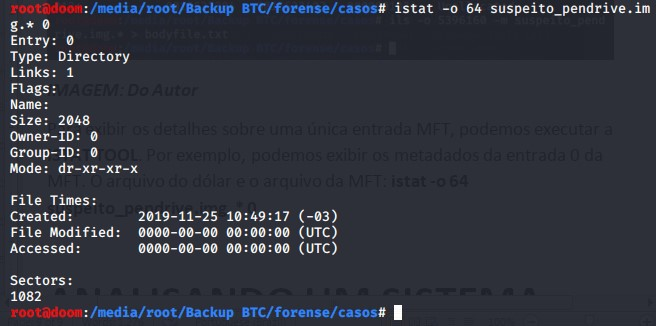
Caso contrário, mostra informações como propriedade, ID da segurança (SID), registros de data e hora,
atributos de arquivo e também o cluster de dados residente não associado. Também podemos transmitir para a
saída de dados de um único cluster com uma ferramenta BLKCAT:
blkcat -o 64 suspeito_pendrive.img. * {NÚMERO DO CLUSTER} |xxd|head
Infelizmente, no exemplo que utilizei não deu retorno de clusters. Um sistema NTFS funcionaria
perfeitamente. Exemplo:
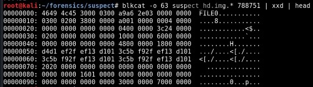
Outra ferramenta útil para a camada de blocos é o BLK. Por padrão, ele copia o conteúdo de todos os blocos não
alocados do volume. A saída deve ser redirecionada para um arquivo e usada como entrada para ferramentas de
gravação de dados para recuperar arquivos excluídos. Veremos mais adiante em outro post.
A recuperação de arquivos excluídos também pode ser feita manualmente com as ferramentas TSK.
Finalmente, apenas algumas palavras sobre a ferramenta de tipo Mac. Ela gera uma linha do tempo de uma
atividade do sistema de arquivos, tendo como entrada um arquivo do corpo criado. Visto com FLS e ou ILS.
Por exemplo, executamos o tempo do Mac com o arquivo do corpo criado anteriormente com o FLS. Nós executaríamos
este comando: mactime -b bodyfile.txt> mactime.txt
Veremos outra maneira de gerar uma linha do tempo posteriormente em outra postagem.
Perfeito! Nesta publicação, abordamos os conceitos mais importantes sobre volumes e sistemas de arquivos de
particionamento de disco. Nós nos apresentamos o SLEUTH KIT, explicando a função de suas categorias de
ferramentas e, em seguida, como usar as mais importantes para analisar o arquivo do sistema.